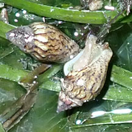
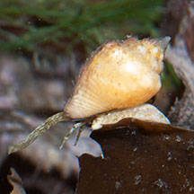
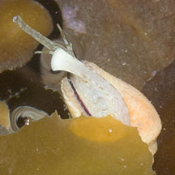
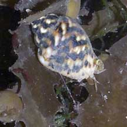

|
|
| shelled snails text index | photo index |
| Phylum Mollusca > Class Gastropoda > Family Columbellidae |
| Dotted
dove snail Euplica scripta Family Columbellidae updated Jul 2020 Where seen? This little snail is sometimes seen in numbers on some of our shores. Usually on large seagrasses (such as Tape seagrass) and large seaweeds (such as Sargassum). Sometimes many can be seen well dispersed among these leafy lifeforms. It was also known as Columbella versicolor, Pyrene versicolor and Pyrene scripta. Features: 1.5-2cm. The thick pale shell is sometimes delicately-patterned with black and yellow markings. Some are plain, while in others, the pattern may be hidden by encrusting growths. Body plain with a pair of tentacles and quite a long siphon. Often seen grazing on the fine algae that coats seagrasses and seaweeds. What does it eat? Like other dove snails that live on seagrasses, it is probably a grazer, chomping up diatoms, sponges and other tiny animals on the seagrass blades, while also scraping some of the seagrass itself. |
 Pulau Sekudu, Jul 20 |
 Sisters Island, Aug 08 |
 Sentosa, Oct 04rs. St. John's Island, Sep 07 |
|
 St. John's Island, Sep 07 |
 Sometimes seen in groups. Pulau Sekudu, Oct 11 |
 Eating the algae growing on seaweed. St. John's Island, Sep 07 |
| Dotted dove snails on Singapore shores |
On wildsingapore
flickr
|
Links
References
|